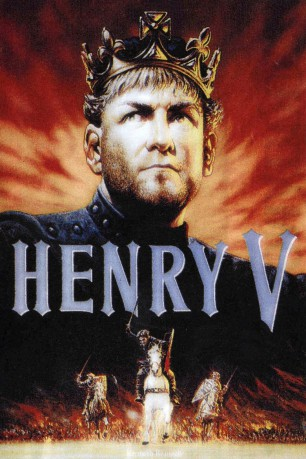

#7604 Heinrich V.
Alternativ: Henry V
Auszeichnungen: 1 Oscars gewonnen für 2 Oscars nominiert 1 BAFTA-Awards gewonnen
 
 IMDB-Wertung: 7.7 / 10
IMDB-Wertung: 7.7 / 10  Metascore: 0
Metascore: 0 
Zwei Jahre nach seiner Inthronisation gewinnt der achtundzwanzigjährige englische König Heinrich V. den Thronrat für einen Feldzug gegen Frankreich, um seine Ansprüche auf die französische Krone gewaltsam durchzusetzen (Hundertjähriger Krieg). Im August 1415 landet er mit seiner Armee in der Nähe der Seinemündung. Zwei Monate später stehen 13 000 erschöpfte Engländer bei Azincourt – 40 Kilometer nordöstlich von Crécy-en-Ponthieu – einem dreimal so großen französischen Ritterheer gegenüber. Wie durch ein Wunder gelingt es Heinrich V., die Gegner in die Flucht zu schlagen und Nordfrankreich zu besetzen. Er gewinnt die französische Krone und nimmt Katharina von Valois zur Frau. Aber er muss sich auch gegen Intriganten in den eigenen Reihen durchsetzen ...
Jahr: 1989
Dauer: 137 Minuten
FSK: 12
Land: England Studio: Impuls-Film Hans-Joachim Flebbe Co.Tonspuren:
Untertitel:
Auflösung: 1080p (1920x1040) Größe: 11571 MB
Genre: Action, Drama, Krieg, Liebe, Geschichte, Biographie
Regisseur:  Kenneth Branagh
Kenneth Branagh
Drehbuch: William Shakespeare
Soundtrack:
Darsteller:
 Derek Jacobi als Chorus
Derek Jacobi als Chorus Kenneth Branagh als King Henry V
Kenneth Branagh als King Henry V- Simon Shepherd als Duke Humphrey of Gloucester
- James Larkin als Duke John of Bedford
 Brian Blessed als Duke Thomas Beaufort of Exeter
Brian Blessed als Duke Thomas Beaufort of Exeter- James Simmons als Duke Edward of York
- Paul Gregory als Westmoreland
- Charles Kay als Archbishop of Canterbury
 Alec McCowen als Bishop of Ely
Alec McCowen als Bishop of Ely- Edward Jewesbury als Sir Thomas Erpingham
 Ian Holm als Captain Fluellen
Ian Holm als Captain Fluellen Danny Webb als Gower
Danny Webb als Gower Jimmy Yuill als Jamy
Jimmy Yuill als Jamy John Sessions als Macmorris
John Sessions als Macmorris- Shaun Prendergast als Bates
 Patrick Doyle als Court
Patrick Doyle als Court Richard Briers als Lieutenant Bardolph
Richard Briers als Lieutenant Bardolph Robert Stephens als Auncient Pistol
Robert Stephens als Auncient Pistol Robbie Coltrane als Sir John Falstaff
Robbie Coltrane als Sir John Falstaff Christian Bale als Robin the Luggage-Boy
Christian Bale als Robin the Luggage-Boy Geraldine McEwan als Alice
Geraldine McEwan als Alice Judi Dench als Mistress Nell Quickly
Judi Dench als Mistress Nell Quickly Paul Scofield als King Charles VI of France
Paul Scofield als King Charles VI of France Michael Maloney als Louis the Dauphin
Michael Maloney als Louis the Dauphin- Harold Innocent als Duke Philippe of Burgundy
 Richard Clifford als Duke Charles of Orleans
Richard Clifford als Duke Charles of Orleans Emma Thompson als Princess Katherine de Valois
Emma Thompson als Princess Katherine de Valois- David Parfitt als Messenger
- David Speed als Soldier , uncredited
- Fabian Cartwright als Earl Richard of Cambridge
- Stephen Simms als Lord Henry Scroop
- Jay Villiers als Sir Thomas Grey
- Michael Williams als Williams
- Geoffrey Hutchings als Corporal Nym
- Colin Hurley als Grandpré
- Richard Easton als Constable Charles Delabreth
- Christopher Ravenscroft als Montjoy
- David Lloyd Meredith als Governor of Harfleur
- Nicholas Ferguson als Earl Richard Beauchamp of Warwick
- Tom Whitehouse als Sir John Talbot
- Nigel Greaves als Duke Jean of Berri
- Julian Gartside als Duke Jean of Bretagne
- Mark Inman als 1st Soldier
- Chris Armstrong als 2nd Soldier
 Kenneth W Caravan als English Soldier , uncredited
Kenneth W Caravan als English Soldier , uncredited Fred Wood als Soldier, Hooded with Staff , uncredited
Fred Wood als Soldier, Hooded with Staff , uncredited
Datei: X:\1989\Heinrich V. (1989, FSK12, 1920x1040).mkv seit 23.11.2017
Festplatte: HD 1987-1991
 Es gibt insgesamt 54 Filme in der Gruppe '1989'
Es gibt insgesamt 54 Filme in der Gruppe '1989'